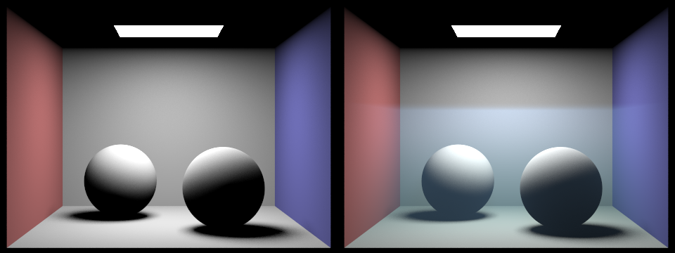

Leon Wu, Haichao Li, Yuanbo Pang, Yutong Xie
We started from the HW3 path tracer, which treats space between surfaces as vacuum. Over the last two weeks we added participating media support and hooked it into the existing integrator. The code lives in src/pathtracer/medium.h and new paths added to pathtracer.cpp.
Two scenes drive the current results. CBbunny.dae is the Cornell box fully underwater, with the overhead area light acting as a sky proxy. CBbunny_water.dae places an explicit water surface at $y = 1.1$ with IOR 1.33, so camera rays entering the box refract through Snell's law with Fresnel reflection at the interface. The water surface is generated by scripts/add_water_surface.py.

The chromatic render shows the teal color shift we were after: red attenuates faster than green and blue, so the red wall and the shadowed floor lose saturation while the blue wall stays close to its surface color. The overhead area light produces soft volumetric illumination in the upper region of the box rather than sharp god rays, which matches how a diffuse sky proxy behaves through a scattering medium. The Snell + Fresnel water surface scene (IOR 1.33) runs through the same pipeline and handles refraction at the interface. On a separate benchmark, swapping the naive delta-tracking estimator for equiangular + MIS gave about a 4x convergence improvement at equal spp. That number is a timing / variance measurement, not something visible in this figure.
We are ahead of the proposal. Heterogeneous density via a bounded BBox with smoothstep falloff was listed as a "hope to deliver" and is done. Chromatic per-channel sigma_a / sigma_s was not in the original plan; we added it after realizing scalar attenuation does not reproduce the underwater color cast. The equiangular sampler, the two-strategy MIS estimator, and the Snell + Fresnel water surface scene were also not in the original plan and ended up being the most technically involved additions.
Two simplifications to flag. We do single-scatter rather than full multi-bounce volumetric path tracing. This is enough for shallow underwater fog and soft illumination through the medium, and multi-bounce is in the remaining work plan. The area-light PDF in the volumetric MIS estimator is evaluated once at the surface reference point rather than resampled per scattering distance $t$. This is a standard approximation and has negligible bias for the small area lights in our test scenes.
| Week | Tasks |
|---|---|
| Apr 21 – Apr 27 | Multi-bounce volumetric GI (at_least_one_bounce_radiance currently returns zero for volume events). Animated water surface driven by Gerstner / sum-of-sinusoids waves, with the surface normal modulated per frame. |
| Apr 28 – May 4 | Render the 10–30 frame animation of the shifting underwater light pattern. Convergence study (MSE vs spp) to back up the 4x number. Final hero renders, final report webpage, final project video, presentation slides. |
Claude Code helped write this milestone page (structure, phrasing, image placement). The renderer itself was written by the team. Claude and Cursor were used for rubber-duck debugging and editing help on the code, with all design decisions and implementation review done by the team.